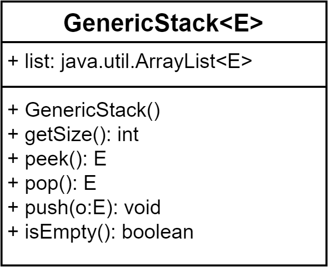

Java程序设计
第五章 泛型和集合框架(1)
泛型
- 类型参数化
- 可定义一种类或方法，可接受任意类型参数
- 在编译时检查错误，而不是运行时检查
- 在JDK1.5以后引入
package java.lang;
import java.util.*;
public interface Comparable< T >{
public int compareTo(T o);
}
- 关于Comparable< T >
- 可替代为任意引用类型
- 不可替代为基本类型
- 替代成实际类型称为泛型实例化
- 可用E或T指代
问题的提出
- 要对学生的成绩进行管理，不同的课程有不同的成绩形式，该如何表示成绩类型？
- 百分制，float或double类型
- 5级制，优秀、良好、中等、及格、不及格、字符串等
- 两级制，合格、不合格，字符串或boolean类型
- 等级制，A、B、C、D、E，字符类型
问题的提出
基于Object类型的解决方案

问题的提出
基于Object类型的解决方案(代码)
class Grade{
private Object stuGrade;
public void setStuGrade(Object sGrade){
this.stuGrade=sGrade;
}
public Object getStuGrade(){
return stuGrade;
}
}
//测试类
public class TestGrade{
public static void main(String[] args){
Grade g=new Grade();
g.setStuGrade(88.5);
float stuGrade=(float)g.getStuGrade();
System.out.println("Student Grade is "+stuGrade);
}
}
问题的提出
基于泛型的解决方案
class Grade{
private T stuGrade;
public void setStuGrade(T sGrade){
this.stuGrade=sGrade;
}
public T getStuGrade(){
return stuGrade;
}
}
public class TestGrade{
public static void main(String[] args){
Grade g=new Grade();
g.setStuGrade(88.5f);
float stuGrade=g.getStuGrade();
System.out.println("Student grade is : " + stuGrade);
}
}
泛型类
- 泛型比使用Object类更简洁，更可靠
- < T >为形式上的类型，称为类型形式参数，也可以用其它字母代替，一般用T或E
- 泛型定义
[访问权限]class 类名< 泛型标识1, 泛型标识2, ... >
[访问权限]泛型标识1 变量名表;
[访问权限]返回类型 方法名(泛型标识 参数名){}
- 泛型使用时要进行实例化，即以具体的类替代泛型标识
- 类名<具体类型名>对象名=new 类名<具体类型名>()
定义泛型类示例
定义泛型方法
- 泛型方法定义
- [访问权限] < 泛型标识 >返回类型 方法名< 泛型标识 参数名 >{}
通配符泛型
- Integer是Number类的子类，但GenericStack< Integer >不是GenericStack< Number >类的子类
- 泛型符标识可采用通配符
- ? 指代任意类
- ? extends T 指代T的任意子类
- ? super T 指代T的任意父类
通配符使用注意
- 通配符泛型无法实例化，即无法使用E object = new E();
- 通配符泛型无法用于初始化数组，即无法使用E[] elements = new E[capacity];，但可使用E[] elements = (E[])new Object[capacity];
- 静态环境中无法使用通配符
public class Test< E >{
public static void m(E o1){
}
public static E o1;
static{
E o2;
}
}